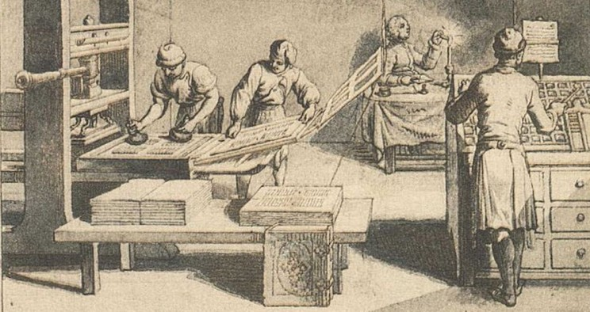
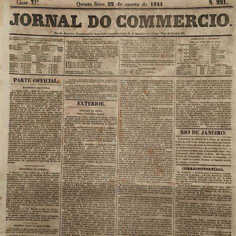
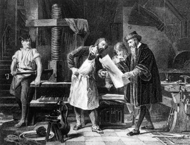

quem não gosta de um bom
cafezinho com leitura
Coffee houses, lugares amados pelos ingleses, estão incorporando uma adição em seus estabelecimentos. A invenção de Richard Steele e Joseph Addison, os folhetins, foi muito bem recebida pelos amantes de café, que antes só tinham o tema do café para discutir.
Imprensa
 Johannes Gutenberg é o nome do inventor da prensa de tipo móvel, isso na década de 1440, essa tecnologia se esplhou pela Europa, sendo que foi Willam Caxton quem a estabilizou a Primeira Prensa Inglesa.
Essa máquina foi extremamente importante para os folhetins, sendo usada para ifazer as impresoes desses, que fizeram grande sucessos nas coffee-houses, e com ajuda de uma das mais famosas historias de folhetins Oliver Twist. (acesse aqui para saber mais.)
Eles chegaram ao Brasil atráves do rei, e fizeram parte da historia brasileira, espalhando noticias do parlamento e até criticando o próprio, agindo até a favor da abolição da escravidão (acesse aqui para saber mais.)
